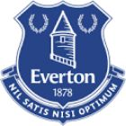

|  | Everton FC |
| Ethnic | English |
| Job | English Football Club |
| Desc | xxxx |
Affiliation
| Location | England |
2017 01 23 Retrieve
[Gerard Deulofeu will spend the rest of the season on loan to AC Milan after Everton confirmed the temporary deal has been completed] Gerard Deulofeu has joined AC Milan on loan until the end of the season. The 22-year-old winger arrived at Goodison Park in the summer of 2013 on a season-long loan before returning on a permanent deal in July 2015. He has scored eight goals in 75 appearances across his two spells and now moves to the San Siro looking to gain more game time after making 13 outings for the Toffees in the first half of 2016/17.
2017 05 03 Retrieve
[Everton winger Aaron Lennon is receiving treatment for ‘a stress-related illness’ after being detained under the Mental Health Act] Aaron Lennon is currently receiving care and treatment for a stress-related illness. The club is supporting him through this and his family has appealed for privacy at this time.
2017 07 10 Retrieve
[Everton midfielder Aaron Lennon has returned to training following treatment for a stress-related illness] Aaron Lennon is currently receiving care and treatment for a stress-related illness. The club is supporting him through this and his family has appealed for privacy at this time.
- 2017 08 31
- Everton have confirmed the signing of Nikola Vlasic from Croatian side Hajduk Split
2017 10 20 Retrieve
[UEFA charge Everton after fans strike Lyon players] This case will be dealt with by the UEFA Control, Ethics and Disciplinary Body on 16 November
2017 10 24 Retrieve
[Everton have announced that David Unsworth will take temporary charge of the first-team beginning with Wednesday’s EFL Cup tie at Chelsea following Ronald Koeman’s sacking] Everton can confirm David Unsworth will take temporary charge of the Everton first team, commencing with tomorrow night’s @Carabao_Cup tie
- 2018 01 05
- Ross Barkley completes £15m move to Chelsea from Everton 2018 01 05b
- Everton have confirmed the signing of Turkey international forward Cenk Tosun for £27 million from Besiktas
- 2018 01 07
- Olympiacos have signed Kevin Mirallas on loan from Everton
- 2018 01 16 Retrieve
- Arsenal winger Theo Walcott is on the verge of signing for Everton for a fee of £20m
- 2018 01 17
- Everton have completed the £20 million signing of Theo Walcott from Arsenal
2018 01 20 Retrieve
[Everton midfielder James McCarthy has suffered a horrific double leg break after Salomon Rondon accidentally kicked his leg in an attempted shot on goal] Heart-breaking moment for James McCarthy as he is stretchered off with what looks like a broken leg after a last-ditch challenge. Thoughts with James.
2018 03 12 Retrieve
[Sigurdsson facing several weeks out with knee injury] Gylfi Sigurdsson will see a specialist [on Monday] evening to determine a timeframe for recovery from the knee injury he sustained in Saturday’s Premier League win over Brighton at Goodison
It is anticipated that the 28-year-old Icelandic international could be sidelined for several weeks but it will only be after consulting with the specialist that a definitive timeframe will be known
2018 05 16 Retrieve
[Allardyce sacked by Everton with Marco Silva leading candidate to take over] Everton Football Club can confirm that Sam Allardyce has left his role as manager.
2018 05 16b Retrieve
[Allardyce sacked by Everton with Marco Silva leading candidate to take over] The club is convinced the appointment of Silva was the right one and had it not been for the unwarranted approach by a Premier League rival for his services we would have continued to prosper under his leadership. The catalyst for this decision is that unwarranted approach, something which the board believes has seen a significant deterioration in both focus and results to the point where the long-term future of Watford FC has been jeopardised. For the security and success of the football club, the board believes it has to make a change
2018 05 16c Retrieve
[Everton have announced that Marcel Brands has been hired as the club’s new director of football] It is a privilege to be joining Everton as director of football and I am incredibly excited to take on this challenge. It is only a challenge such as this which could have persuaded me to leave PSV where I am indebted to the many people whose collective effort led to some great achievements. Now we will look to build something really strong and lasting here at Everton
- 2018 05 31
- Marco Silva is set to be appointed Everton manager
- 2018 07 24
- Everton have completed the signing of Richarlison for £40 millio from Watford
- 2018 08 01
- Everton have completed the signing of Lucas Digne from Barcelona for £22m
- 2018 08 04
- Everton attacker Kevin Mirallas has completed his move to Fiorentina
- 2018 08 09
- Everton have completed the signing of Brazil winger Bernard on a four-year deal from Shakhtar Donetsk
- 2018 08 09b
- Barcelona have confirmed agreements with Everton that will see Yerry Mina and Andre Gomes join the Premier League side
2018 08 10 Retrieve
[Everton have announced the signing of Chelsea defender Kurt Zouma on a season-long loan deal] Kurt Zouma has joined Everton on loan until the end of the season. Frenchman Zouma moves from Chelsea and joins Brazil midfielder Bernard, Barcelona trio Yerry Mina, Andre Gomes and Lucas Digne, Richarlison and Joao Virginia in arriving at Goodison in the summer transfer window. After making his debut as a 16-year-old for Saint-Étienne in his homeland, Zouma established himself at the heart of their defence for three seasons before moving to Chelsea. Capped twice by France, he lifted the League Cup under Jose Mourinho in 2015.
- 2018 08 14
- Alisher Usmanov is open to investing in Everton after agreeing to the sale of his stake in Arsenal to Stan Kroenke in a £1.8 billion [$2.3bn] takeover
- 2018 08 25
- Aston Villa have confirmed that they have signed Yannick Bolasie on loan from Everton
- 2018 08 29
- Real Sociedad are set to sign Spanish striker Sandro Ramirez on loan from Everton
- 2018 12 20
- Everton have confirmed their proposed new stadium at Bramley Moore Dock will have a capacity of 52,000
2019 02 22 Retrieve
[Everton and Watford reach agreement over Marco Silva approach] Everton and Watford can confirm that they have reached an amicable agreement regarding the appointment of Marco Silva as Everton manager last year. Both Everton and Watford are keen to move on from this matter
- 2019 05 23
- Of the 20 teams that competed in the Premier League 10 years ago, for example, only seven have managed to maintain their divisional integrity. They are: Manchester United, Liverpool, Chelsea, Arsenal, Everton, Tottenham and Manchester City. The rest have all tasted relegation. Aston Villa, Fulham, West Ham, Stoke City, West Brom, Newcastle United, Hull City and Middlesbrough have all dropped into the Championship at various stages, while Bolton, Sunderland, Wigan Athletic, Portsmouth and Blackburn Rovers tumbled further down the pyramid, dropping into League One
- 2019 05 24
- Everton have signed Huddersfield Town goalkeeper Jonas Lossl on a free transfer when his contract expires at the end of June
- 2019 06 04
- Phil Jagielka has announced he is to leave Everton after spending 12 seasons at Goodison Park.
- 2019 06 07
- Everton have announced Luis Boa Morte as their new assistant manager following the departure of Joao Pedro Sousa.
2019 06 07b Retrieve
[Ashley Williams leaving Everton] Everton can confirm Ashley Williams will leave the club when his current contract expires at the end of the month
2019 06 07c Retrieve
[Leighton Baines offered extension as Ashley Williams leaves Everton] Everton wishes to thank all departing players for their contribution throughout their time at the club
- 2019 06 10
- Everton winger Yannick Bolasie is set to leave the Premier League this summer
2019 06 10b Retrieve
[Schalke have announced the signing of Jonjoe Kenny on loan from Everton for the 2019-20 campaign] Jonjoe Kenny is joining Bundesliga team Schalke 04 on a season-long loan for the 2019-20 campaign. Kenny will link up with Schalke manager David Wagner and his side when he returns from international duty with England Under-21s. The 22-year-old right-back is in the Young Lions squad that will compete in the UEFA European Under-21 Championship, which gets under way in Italy this weekend.
- 2019 06 13
- Everton’s fixtures for the 2019-20 Premier League season have been released ahead of the campaign’s kick-off
- 2019 06 21
- Everton defender Jonjoe Kenny prepares to play for Schalke 04.
- 2019 06 25
- Everton have signed Andre Gomes from Barcelona for a fee of €25 million
- 2019 07 01
- Everton are keen to secure a permanent deal to sign Chelsea defender Kurt Zouma following his successful loan spell at Goodison Park last season
- 2019 07 04
- Sheffield United have secured the return of former Everton defender Phil Jagielka to Bramall Lane on an initial one-year deal
- 2019 07 15
- Everton have confirmed the signing of Manchester City midfielder Fabian Delph, for a fee believed to be around £8.5 million, which could rise to £10m
2019 07 24 Retrieve
[Everton defender Yerry Mina has been charged with misconduct by the Football Association for a violation of the organisation’s betting regulations] Everton FC’s Yerry Mina has been charged with misconduct in relation to the FA’s Betting rules. It is alleged that the defender breached FA Rule E8 (3) by participating in an advertisement for betting activity which he is prohibited from engaging in. He has until Friday (26/07/2019) to provide a response
[The rule Mina is alleged to have broken says] An individual participant, when acting in a personal capacity, shall not be permitted to advertise or promote any betting activity that the participant is prohibited from engaging in by Rule E8(1) or E8(2)
2019 07 25 Retrieve
[Everton have unveiled plans for their new stadium in north Liverpool, with the Toffees claiming that it will deliver a £1billion boost to the Merseyside region and economy] The concepts show a stunning brick, steel and glass design which takes its inspiration from the historic maritime and warehouse buildings nearby. The structure combines the historic and the modern, with the brick base of the stadium incorporating a subtle nod to Goodison Park’s famous Archibald Leitch lattice work while the dynamic roof structure made from steel and glass gives the stadium a modern finish
[With the move to Bramley-Moore Dock, Everton have also confirmed that Goodison Park will subsequently be demolished] Today marks an incredibly important milestone for us as we seek to build a new stadium which will act as a ‘game changer’ for the club and our city region. Our proposed stadium design takes its inspiration from both our city’s maritime history and from our club’s rich heritage and traditions
- 2019 07 29
- Everton have begun negotiations with Juventus over a move for forward Moise Kean and are expected to resume talks in the coming hours to seal a deal for the Italy international
- 2019 07 30
- Paris Saint-Germain have completed the signing of Everton midfielder Idrissa Gana Gueye, with the fee reported to be £28 million
2019 07 30b Retrieve
[Everton deny making second £55m Zaha bid that included Cenk Tosun and James McCarthy] Everton categorically denies a bid has been submitted to Crystal Palace for Wilfried Zaha that included an increased sum plus Cenk Tosun and James McCarthy. Everton and Crystal Palace have very good relationship. A bid was made over weekend which was turned down. Both clubs agreed that was end of matter
- 2019 07 30c
- Everton have agreed a deal to sign Moise Kean from Juventus in a deal worth an initial €32 million
- 2019 08 02
- Everton have signed midfielder Jean-Philippe Gbamin from Mainz for £25million
- 2019 08 04
- Everton have confirmed the capture of highly rated Juventus teenager Moise Kean in a deal worth an initial €27.5 million
- 2019 08 07
- Everton have confirmed the signing of World Cup winner Djibril Sidibe, who joins the Premier League side on loan from Monaco
- 2019 08 08
- Muhamed Besic has left Everton and signed for Premier League newcomers Sheffield United on a loan deal for the 2019-20 season
- 2019 08 08b
- Everton have confirmed the arrival of Alex Iwobi from Arsenal for a fee of £40 million
2019 11 04 Retrieve
[Everton investigating alleged racist abuse of Son Heung-min during Tottenham clash] Everton is investigating an alleged incident of racist behaviour by a supporter attending today’s fixture against Tottenham. Everton strongly condemns any form of racism. Any such behaviour has no place within our stadium, our club, our community or our game
2019 11 04b Retrieve
[Andre Gomes injury: Everton star expected to make full recovery after undergoing successful surgery on horror ankle dislocation] Everton Football Club can confirm Andre Gomes underwent surgery to repair a fracture dislocation to his right ankle earlier today and the procedure went extremely well. The Portugal international, who sustained the injury in yesterday’s Premier League fixture with Tottenham Hotspur, will now spend some time recovering in hospital, before returning to USM Finch Farm to start his rehabilitation under the guidance of the club’s medical staff. The 26-year-old is expected to make a full recovery. On behalf of Andre, the club would like to thank all Everton supporters and members of the wider football family for the overwhelming messages of support we have received since yesterday’s match
2019 11 04c Retrieve
[Everton confirm extent of Gomes injury after Son tackle] Everton Football Club can confirm Andre Gomes wil undergo surgery tomorrow (Monday, November 4) after sustaining an ankle injury in today’s game with Tottenham
Andre wast stretchered from the pitch during the second half of the game and taken straight to Aintree Hospital by ambulance accompanied by members of the Everton medical team
After undergoing hospital tests, it was confirmed he had suffered a fracture dislocation to his right ankle. The club will provide further updates in due course
2019 11 05 Retrieve
[Andre Gomes leaves hospital after horror ankle injury to start road to recovery at Everton] Following a successful operation yesterday, Andre Gomes has now been discharged from hospital and will continue his rehabilitation under the care of our medical team
2019 11 05b Retrieve
[Andre Gomes leaves hospital after horror ankle injury to start road to recovery at Everton] Everton Football Club can confirm Andre Gomes underwent surgery to repair a fracture dislocation to his right ankle earlier today and the procedure went extremely well. The Portugal international, who sustained the injury in yesterday’s Premier League fixture with Tottenham Hotspur, will now spend some time recovering in hospital, before returning to USM Finch Farm to start his rehabilitation under the guidance of the club’s medical staff. The 26-year-old is expected to make a full recovery. On behalf of Andre, the club would like to thank all Everton supporters and members of the wider football family for the overwhelming messages of support we have received since yesterday’s match
2019 11 12 Retrieve
[Everton midfielder Andre Gomes suffered a horrific fracture-dislocation of his right ankle during a clash with Tottenham players during their Premier League meeting] Everton Football Club can confirm Andre Gomes underwent surgery to repair a fracture-dislocation to his right ankle earlier today and the procedure went extremely well
The Portugal international, who sustained the injury in yesterday’s Premier League fixture with Tottenham Hotspur, will now spend some time recovering in hospital, before returning to USM Finch Farm to start his rehabilitation under the guidance of the club’s medical staff. The 26-year-old is expected to make a full recovery. On behalf of Andre, the club would like to thank all Everton supporters and members of the wider football family for the overwhelming messages of support we have received since yesterday’s match
2019 12 05 Retrieve
[Everton sack Marco Silva after 18 months in charge] Everton Football Club can confirm that manager Marco Silva has left the club. Majority shareholder Farhad Moshiri, chairman Bill Kenwright and the board of directors would like to thank Marco for his service over the last 18 months and wish him well for the future. Duncan Ferguson has taken temporary charge of the first team and will manage the side for the game against Chelsea on Saturday. The club aims to confirm a new permanent manager as swiftly as possible
2019 12 08 Retrieve
[Everton to investigate reported homophobic chanting at Chelsea match] Everton is working in conjunction with Kick It Out and has commenced an investigation into homophobic chanting reported during Saturday’s Premier League game against Chelsea. Both the club and Kick It Out have received reports of a homophobic chant being aimed at Chelsea’s fans by a small section of the home crowd. Homophobia has no place within our stadium, our club, our community or our game. The club strongly condemns such behaviour and is carrying out a thorough investigation which will include liaison with Merseyside Police. Matchgoers who have information relating to any form of discrimination should email reportit@evertonfc.com
2019 12 16 Retrieve
[Everton deny appointing manager amid Ancelotti rumours] In the 11 days since Marco Silva left the club, the Everton board has been working hard to recruit a new permanent manager - and has held meetings with a number of candidates. We can confirm that thus far no contract offer has been made and no candidate has chosen to withdraw from the process
2020 02 17 Retrieve
[Everton end shirt sponsorship contract with betting firm SportPesa] Everton Football Club will end its partnership agreement with SportPesa at the end of the current season. This has been a difficult decision but one that allows us to best deliver on our commercial plan and to grasp the new opportunities now open to us.. […] This has been a difficult decision but one that allows us to best deliver on our commercial plan and to grasp the new opportunities now open to us. The club would like to thank SportPesa for all of the work that has been done together. Our partnership has seen our first team visit Africa on two occasions, as well as former players and club staff, take part in numerous activations in the region. This has allowed us to grow our own footprint in Africa and further strengthen our special relationship with the continents
2020 03 06 Retrieve
[Everton striker Cenk Tosun’s injury] Cenk Tosun has returned to Everton and will undergo surgery next week after sustaining an injury to his knee during training earlier this week. The player will continue his rehabilitation under the care of Everton’s medical staff following the surgical procedure. Everyone at Crystal Palace wishes Cenk the best with his recovery
2020 03 13 Retrieve
[Everton in self-isolation after first-team player reports coronavirus symptoms] Everton Football Club can confirm that, as a precautionary measure, its entire first-team squad and coaching staff are undertaking a period of self-isolation following medical advice.
The step has been taken after a first-team player reported symptoms consistent with coronavirus. The Club is in regular contact with the player in question and is monitoring the wellbeing of all players and staff.
The health, welfare and safety of all Everton players, staff and stakeholders is the Club’s absolute priority.
Therefore, the Club has taken the decision to close down all Everton workplaces including USM Finch Farm, Goodison Park and its headquarters at the Royal Liver Building in Liverpool City Centre. The Club’s retail store at Goodison Park will also close but its Liverpool ONE store is unaffected and will remain open.
Everton will continue to adhere to UK Government and Public Health guidelines with regards to the closure of its facilities and wellbeing of staff and will be discussing next steps with regards to upcoming fixtures with the Premier League on Friday morning.
Further updates will be provided in due course, including guidance relating to forthcoming fixtures
2020 03 14 Retrieve
Everton Football Club can confirm that, as a precautionary measure, its entire first-team squad and coaching staff are undertaking a period of self-isolation following medical advice. The step has been taken after a first-team player reported symptoms consistent with coronavirus. The club is in regular contact with the player in question and is monitoring the wellbeing of all players and staff
2020 04 25 Retrieve
[Everton ‘appalled’ after Moise Kean breaks coronavirus guidelines to throw lockdown party] Everton Football Club was appalled to learn of an incident in which a first-team player ignored government guidance and club policy in relation to the coronavirus crisis. The club has strongly expressed its disappointment to the player and made it clear that such actions are completely unacceptable
Everton has regularly stressed the importance of following all the government guidelines - including rules and advice for inside and outside of the home - through a series of official communications to all staff members, including players.
The amazing people in the NHS deserve the utmost respect for their hard work and sacrifice. The best way to show them respect is by doing everything we can to protect them
2020 05 03 Retrieve
[Netherlands manager Koeman hospitalised with heart problems] Everyone at Everton would like to wish former boss Ronald Koeman a speedy recovery
2020 05 18 Retrieve
[Everton to refund fans for remaining games of 2019-20 Premier League season] Everton has confirmed all fans with tickets for the club’s remaining five home Premier League fixtures of the 2019/20 season will be able to claim a refund due to the increasing expectation that - should the remaining games be played - they will take place behind closed doors.
Season ticket members will be entitled to a credit or refund on a pro-rata basis for the five games and will also be given the option to forgo part or all of their balance in order for the club to donate that amount in full over to Everton in the community
The option for a portion - or all - of the available refund to be made available to Everton in the Community was introduced as a result of requests from fan groups and individual supporters who have been keen to show their appreciation for the club’s charity. The charity’s work has come into increased focus during the coronavirus pandemic as a result of the Blue Family coordinated outreach campaign
The Blue Family initiative has benefited thousands of vulnerable and isolated people and is continuing to provide key assistance and support to those in our community in greatest need. Beyond Blue Family - and as a pre-eminent charity in the world of football - the scale and impact of Everton in the Community’s works is significant
Every £1 donated to the charity is proven to be worth almost 15 times that amount as a result of the positive impact the charity’s programmes and initiatives have on communities in Liverpool and beyond
Season ticket members who may not have renewed for the 20/21 season when the remaining games for the 19/20 season are confirmed will be given the opportunity to request that their refund entitlement be used as a credit towards their renewal for next season
2020 05 28 Retrieve
[Everton midfielder Jean-Philippe Gbamin suffers serious Achilles injury] Gbamin is set to undergo surgery next week after suffering a serious Achilles injury in training. The injury, sustained in a non-contact situation at USM Finch Farm, is unrelated to the quadriceps problem Gbamin had been working his way back from since August last year. Everyone at the club is devastated for JP and we will ensure he gets all the support he needs throughout this challenging time